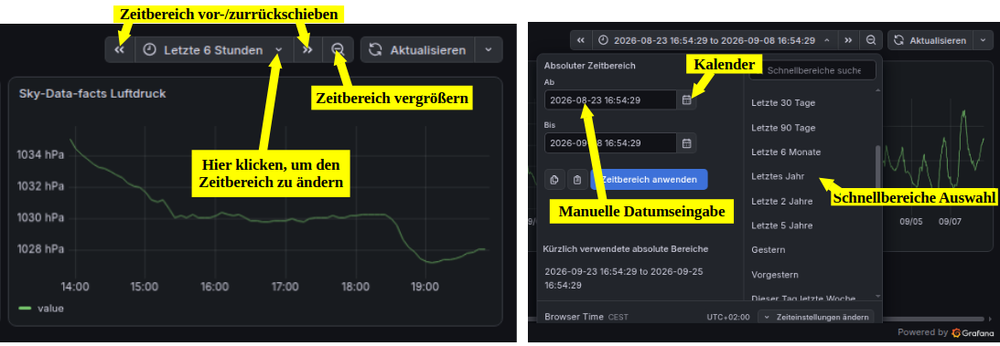

Sky-Data-facts!

Wetteraufzeichnungen Essel
(Koordinaten: 52.689444°, 9.643611°)
zum Vergleich hier Open Meteo Werte
Temperatur: -- °C
Luftdruck: -- hPa
Aktuelle Werte (Stand: -- Uhr) – bereitgestellt von Open-Meteo.
Luftdruck Korrektur 08.10.2026
Schnellerklärung (Anleitung)

Zeitbereich markieren (Zoom)

Eine Person, die mitten in einem Gewässer steht